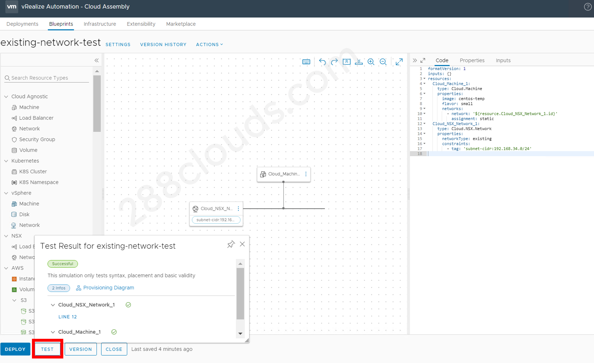

Parte 1 de la Serie Blog vRA 8 + NSX-T: Plantilla vRA 8 con Redes NSX-T Existentes

Contenido
Puede crear una plantilla vRA 8 para desplegar máquinas conectadas a redes NSX-T existentes.
Versiones de Productos (Demo)
- vSphere 6.5 U3
- vRA 8.0.1 (incluyendo vRSLCM y vIDM)
- NSX-T 2.5.1
- vSAN 6.6.1
Prerrequisitos
vRA 8:
- Cuenta conectada de NSX-T
- Infraestructura básica configurada (proyectos, zonas de nube, “image mappings” o asignaciones de imagen, “flavor mappings” o asignaciones de tipo)
NSX-T:
- enrutador lógico (tier-0 o tier-1) configurado
- red lógico conectado a un enrutador lógico
Información General de Proceso
- Configure las redes existentes con rangos de IP que desea utilizar para las VMs (máquinas virtuales).
- Cree un perfil de red.
- Agregue las redes existentes que desea utilizar en el perfil de red.
- Cree una plantilla con los objectos: “Cloud Agnostic Machine” (máquina agnóstica de nube) y “NSX Network” (red NSX).
- Especifique cual red que desea utilizar agregando una etiqueta de restricción en el objeto “NSX Network” (red NSX).
Pasos opcionales:
- Cree etiquetas para las redes existentes con los nombres del deseo.
- Cree entrada en la plantilla para personalizar el nombre de la máquina.
Ejemplo
Configure el Rango de IP para Red Existente
- Inicie sesión en el UI (interfaz de usario) de vRA Cloud Assembly.
- Vaya a “Infraestructura” > “Redes” (en el menú “Recursos”).
- De clic en la red existente que desea utilizar y asegúrese que toda la información está completa.

- De clic en la “checkbox” (la casilla de verificación) al lado de la red existente que desea utilizar y de clic en el botón “ADMINISTRAR RANGOS DE IP”.
- De clic en el botón “+ NUEVO RANGO DE IP”.
- Cree rango de IP que desea utilizar para dar las direcciones IP a las máquinas implementadas de la plantilla.
- Revise otra vez la primera y última direccion IP en el rango creado para asegurar que están correctas.


Configure el Perfil de Red
- Vaya a “Infraestructura” > “Perfiles de Red” (en el menú “Configurar”) y de clic en el botón “+ NUEVO PERFIL DE RED”.
- Escoge la cuenta o región y nombre el perfil.
- Seleccione “Redes” y de clic en el botón “+ AGREGAR RED”.
- Escoge la red existente que desea utilizar en la plantilla y agréguela.


Cree la Plantilla
- Vaya a “Diseño”, de clic en el botón “NOVEDADES DE” y de clic en el botón “Lienzo en blanco” para creer una nueva plantilla.
- Nombra la plantilla y escoge el proyecto.
- Arrastra “Cloud Agnostic Machine” (máquina agnóstica de nube) y “NSX Network” (red NSX) al lienzo en blanco.
- Conecta “Cloud Agnostic Machine” a “NSX Network” en el lienzo en blanco.


Configure la Plantilla
- A la derecha en el código YAML, escoge una imagen y un tipo para la máquina. Un menú de las opciones disponibles aparecerá cuando de clic en el espacio entre las comillas.
- Debajo de
-network:, agregue una líneaassignment: staticpara dar una dirección IP estática a la máquina desde el rango de IP. - Para la “NSX network”, asegúrese que dice
networkType: existingdebajo deproperties. - Debajo de
networkType, agregue una líneaconstraintsy otra línea-tag:para escoger la red existente que desea utilizar.
- De clic en el botón “PROBAR”.
- De clic en el botón “IMPLEMENTAR” para crear una nueva implementación.
- Entra el nombre de la nueva implementación, escoge “Borrador actual” y de clic en el botón “IMPLEMENTAR”.


Verifique la Implementación
- Supervise el progreso de la implementación. Cuando está completa, puede ver la implementación en la sección de vRA Cloud Assembly “Implementaciones” y la nueva máquina creada en el cliente web de vSphere.


Código YAML de la Plantilla de Ejemplo
|
|